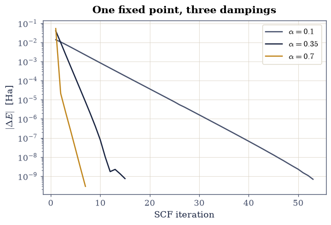
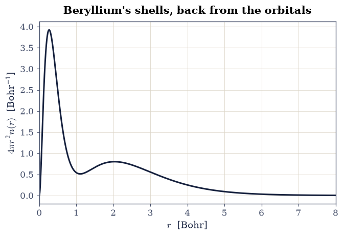
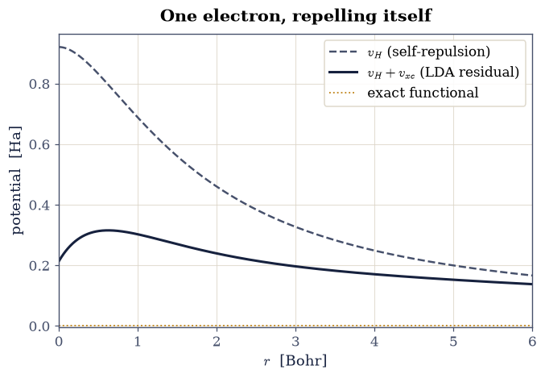
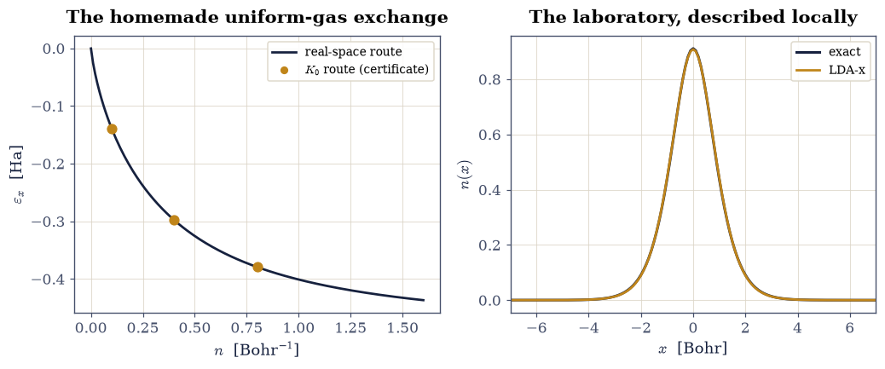
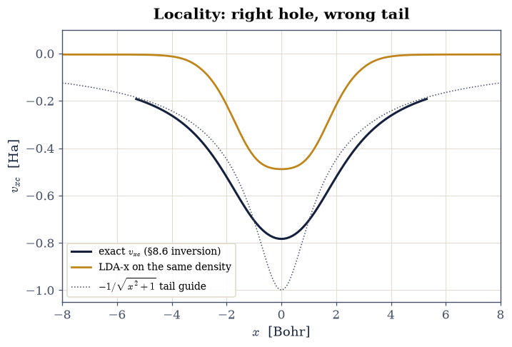

8.7 The Kohn–Sham Construction#
Notebook overview#
This is the notebook the movement was built toward. Thomas–Fermi (§8.5) showed a density-only theory is possible and its local kinetic energy is fatal; Hohenberg–Kohn (§8.6) proved the density suffices and even computed the exact Kohn–Sham potential of the laboratory. Kohn and Sham’s 1965 move [KS65] assembled the pieces into the scheme that now consumes a measurable share of the world’s supercomputing: keep orbitals for the kinetic energy (the fictitious non-interacting system of the §8.6 inversion, now made the engine rather than the diagnostic), and shovel everything unknown into an exchange-correlation functional \(E_{xc}[n]\) — which the homogeneous electron gas of §8.4 supplies in its local-density form.
The program: derive the KS equations and assemble the LDA potential from the §8.4 deliverable (certifying the correlation potential’s derivative by central differences, in the §8.5 toolkit’s spirit); study the self-consistent loop as the damped fixed point it is; solve He, Be, and Ne against the standard reference values (shells restored, \(2p\) channel and all); then the honest ledger, in three exhibits. The hydrogen atom, where one electron interacts with itself through the mean field and LDA misses the exact \(-1/2\) Ha by \(11\%\) while its eigenvalue misses by half. A local-density approximation built from scratch for the laboratory’s own soft interaction — its uniform-gas exchange computed by two independent routes that agree to better than \(10^{-4}\) — and judged against the exact answer the laboratory knows. And the face-off: the LDA exchange-correlation potential laid over the exact one recovered in §8.6, where the local approximation’s exponentially dying tail against the exact \(-1/|x|\) makes the band-gap troubles of §8.8 visible a notebook early.
Conventions (this notebook). Hartree atomic units. Three-dimensional atoms are spin-unpolarized (all systems here are closed-shell except hydrogen, whose unpolarized treatment is deliberate and discussed), on the uniform radial grid \(r_j = jh\), \(h = 25/8000\) Bohr, with the Hartree potential by the shell theorem’s two cumulative integrals (
numpy.cumsum, an \(O(N)\) replacement for the dense kernel) and eigenproblems per angular channel byscipy.linalg.eigh_tridiagonal(the \(l(l+1)/2r^2\) centrifugal term added for \(p\) states). The LDA uses §8.4 exchange and Perdew–Zunger correlation [PZ81]. Total energies use the standard double-counting-corrected assembly \(E = \sum_i f_i\varepsilon_i - \tfrac12\!\int\! v_H n - \!\int\! v_{xc} n + E_{xc}[n]\). One-dimensional laboratory work reuses the §8.2 grid and interaction.How to read the checks. Each exercise closes with a
validatecall against an independent fact: a derivative identity, the standard reference energies, the exact laboratory, the §8.6 potential. A ✓ is strong evidence; a ✗ is a prompt to locate the discrepancy, not an automatic verdict.Scope. LDA only, deliberately: gradient corrections, hybrids, and the rest of the functional zoo are surveyed against exact constraints in §8.8, and Martin [Mar04], Ch. 8–9, and Parr & Yang [PY89], Ch. 7–8, carry the full story. The reference atomic values quoted are the standard local-density benchmarks (the NIST atomic reference data; tiny differences between correlation parametrizations are noted where they show).
Theory in brief#
The construction#
Kohn and Sham [KS65] split Levy’s functional (Eq. 879) not where nature suggests but where computation does:
with \(T_s\) the non-interacting kinetic functional evaluated through orbitals and \(E_{xc}\) defined as everything left over — the kinetic correlation the §8.6 Levy bound measured, plus the interaction beyond Hartree. Varying the total energy over orbitals (the §8.3 constrained-variation pattern) gives one-electron equations in a local potential,
a self-consistency loop identical in shape to Hartree–Fock’s but with exchange’s nonlocal matrix replaced by a function of the local density. All the many-body difficulty now lives in one functional, and the total energy is assembled without double counting as
(the eigenvalue sum counts the mean field once per electron; the corrections put back the halves — the bookkeeping trap first met in §8.2, now in its canonical form).
The local-density approximation#
The one functional the course has earned is local: assign each point the exchange-correlation energy a uniform gas of that density would have,
with \(\varepsilon_{xc} = \varepsilon_x + \varepsilon_c\) exactly the §8.4 deliverable: \(\varepsilon_x = -\tfrac34 (3/\pi)^{1/3} n^{1/3}\) (so \(v_x = -(3/\pi)^{1/3} n^{1/3}\), the derivative picking up \(4/3\)) and the Perdew–Zunger \(\varepsilon_c(r_s)\), whose \(v_c\) follows from the same rule via \(r_s(n)\). Why should a uniform-gas fact serve atoms whose density spans six orders of magnitude? Two structural reasons, both met already: the LDA hole inherits the exact \(-1\) sum rule from the real gas it is stolen from (§8.2’s constraint), and energies integrate over the hole’s spherical average only, forgiving much local error. The approximation’s failures are equally structural — above all self-interaction: in Eq. 884 each electron’s own charge sits in \(v_H\), and where Hartree–Fock’s \(K_{ii} = J_{ii}\) (§8.3) cancelled it exactly, the LDA can only cancel it approximately. One electron alone in the universe still repels itself. Hydrogen will put a number on that.
Setup#
Data and instruments: the series palette, the exchange coefficient \(C_x\) and the Perdew–Zunger correlation energy fit that §8.4 delivered, the Wigner–Seitz conversion, the radial grid, and the classical Hartree potential. The notebook’s own machinery — the correlation potential and the self-consistent Kohn–Sham engine itself — you build in Exercises 1 and 2, and the laboratory’s from-scratch functional in Exercise 5.
The Setup below holds this notebook’s data and instruments — nothing you are asked to build. It is collapsed so the building stays yours; expand it whenever you want the details.
Exercise 1 — The LDA potential, assembled and certified#
Setup holds the §8.4 energy curve; Equation Eq. 886 turns it into a potential by differentiation, and that potential is what every orbital in this notebook will feel. Exchange differentiates in one line — \(\varepsilon_x = C_x n^{1/3}\) gives \(v_x = \tfrac43 C_x n^{1/3}\), the \(4/3\) the whole story — while Perdew–Zunger publish their \(v_c\) in closed form, one expression per branch of Eq. 872. For \(r_s \ge 1\), where \(\varepsilon_c = \gamma/(1 + \beta_1\sqrt{r_s} + \beta_2 r_s)\),
for \(r_s < 1\), where \(\varepsilon_c = A\ln r_s + B + C r_s \ln r_s + D r_s\), the same rule gives
with the §8.4 constants \(\gamma = -0.1423\), \(\beta_1 = 1.0529\), \(\beta_2 = 0.3334\) and \(A = 0.0311\), \(B = -0.048\), \(C = 0.0020\), \(D = -0.0116\) (Hartree). Transcribing formulas like these is exactly the kind of step that deserves a gate: a dropped \(7/6\) would poison every result downstream while looking perfectly plausible. The certificate is the §8.5 functional-derivative discipline applied to a plain function — \(v_{xc}(n)\) must equal the central difference of \(n\,\varepsilon_{xc}(n)\).
Part a) Write v_c_pz_vec(rs), the two-branch correlation potential
above, vectorized over an array of Wigner–Seitz radii (boolean masks on
rs >= 1, as the Setup energy fit does).
Part b) Evaluate the assembled \(v_{xc}(n) = \tfrac43 C_x n^{1/3} + v_c\)
on twenty densities log-spaced over \(n \in [10^{-4}, 10]\)
(numpy.geomspace, with the Setup rs_of_n converting).
Part c) Certify it against
\(\big[(n+\delta)\varepsilon_{xc}(n+\delta) - (n-\delta)\varepsilon_{xc}(n-\delta)\big]/2\delta\)
with \(\delta = 10^{-6}\,n\) (numpy arithmetic; relative step, since the
densities span five decades). Agreement at \(10^{-6}\) certifies the
transcription; the ladder to every atom below rests on these twenty numbers.
max relative deviation of v_xc from its definition: 1.15e-10
sample: at n = 0.01, v_xc = -0.27590 Ha
Validation 1 — the transcription is faithful#
The closed-form potential must match the defining derivative to \(10^{-6}\) across all twenty densities, both Perdew–Zunger branches included.
✓ v_xc equals d(n eps_xc)/dn across five decades [got 1.15252e-10 vs expected 0 (rtol=0, atol=1e-06)]
✓ the xc potential is attractive throughout [electrons dig their own holes]
True
Exercise 2 — The engine, and the loop watched#
Everything above has been preparation; here the Kohn–Sham scheme becomes a
program. Equation Eq. 884 is solved channel by channel — for
each angular momentum \(l\) the radial Hamiltonian is tridiagonal on the Setup
grid, \(1/h^2 - Z/r + v_H + v_{xc} + l(l+1)/2r^2\) on the diagonal and the
Setup OFF_R off it, so scipy.linalg.eigh_tridiagonal with
select="i" returns exactly the lowest states each channel needs — and each
occupied radial function \(u_i\), normalized as \(h\sum u_i^2 = 1\), contributes
\(f_i u_i^2 / 4\pi r^2\) to the new density. The total energy is the
double-counting-corrected assembly of Eq. 885, whose four
terms are the eigenvalue sum, the half-subtracted Hartree integral, the
subtracted \(\int v_{xc} n\), and \(E_{xc}\) itself.
The equations demand self-consistency, and §0.2 taught the vocabulary: the SCF cycle is a fixed-point map on densities, linear mixing \(n \leftarrow (1-\alpha)\,n + \alpha\,n_{\mathrm{new}}\) is damped iteration, and the damping trades speed against stability. Helium is the clean test bed.
Part a) Write solve_atom_lda(Z, channels, mixing=0.35, tol=1e-9, max_iter=300), the self-consistent spin-unpolarized radial Kohn–Sham LDA
solver: start from zero \(v_H\) and \(v_{xc}\), build the exchange–correlation
potential of each iterate as \(\tfrac43 C_x n^{1/3}\) plus the v_c_pz_vec you
wrote in Exercise 1 (with the Setup rs_of_n and hartree_radial supplying
\(r_s\) and \(v_H\)), diagonalize every channel of the channels dict
(mapping \(l\) to the occupations of that channel’s lowest states, so neon is
{0: [2, 2], 1: [6]}), mix the new density in linearly, and return
(E, eigenvalues, density, history) with history the per-iteration
\(|\Delta E|\). Write this one yourself — the implementation is the lesson.
Part b) Run it on helium at mixing \(\alpha = 0.1, 0.35, 0.7\) and record the three \(|\Delta E|\) histories.
Part c) Plot the three convergence traces on a matplotlib log axis and
confirm the trade: all three reach the same energy to \(10^{-8}\) Ha (a fixed
point does not care how it is approached), with iteration counts falling as
\(\alpha\) grows — and with the standing warning that in harder systems (small
gaps, charge sloshing between distant regions) large \(\alpha\) turns
oscillatory or divergent, which is why production codes ship with Anderson,
Broyden, and Pulay accelerators.
alpha = 0.1: 54 iterations, E = -2.83425501 Ha
alpha = 0.35: 16 iterations, E = -2.83425501 Ha
alpha = 0.7: 8 iterations, E = -2.83425501 Ha

Fig. 780 The Kohn–Sham self-consistency loop as a damped fixed point: per-iteration energy change for helium at linear mixing \(\alpha = 0.1, 0.35, 0.7\), all converging geometrically to the same total energy within \(10^{-8}\) Ha, with rate increasing with \(\alpha\). In harder systems (small gaps, long-range charge sloshing) aggressive mixing destabilizes, which is why production codes accelerate with Anderson or Pulay schemes.#
Validation 2 — the fixed point is unique#
The three runs must agree to \(10^{-8}\) Ha, and the iteration count must fall monotonically with \(\alpha\) on this well-behaved system.
✓ one destination for every damping [got 1.36417e-09 vs expected 0 (rtol=0, atol=1e-08)]
✓ heavier damping pays in iterations [54 > 16 > 8]
True
Exercise 3 — Helium, beryllium, neon: the working theory#
The engine now earns its keep on three closed-shell atoms against the standard local-density reference values (the NIST atomic benchmarks; the uniform grid and the correlation parametrization together account for differences at a few parts in \(10^4\) of the totals): total energies \(-2.8348\), \(-14.4472\), \(-128.2335\) Ha, and the orbital-energy spectra including neon’s \(2p\) channel — the volume’s first \(l > 0\) state, carried by the centrifugal term in the engine you wrote.
Part a) Solve He (\(1s^2\)), Be (\(1s^2 2s^2\)), and Ne (\(1s^2 2s^2 2p^6\))
with the solve_atom_lda you wrote in Exercise 2, and tabulate totals and
eigenvalues against the
references (He \(\varepsilon_{1s} = -0.5704\); Be \(-3.8564, -0.2057\); Ne
\(-30.306, -1.3228, -0.4980\) Ha).
Part b) Plot beryllium’s radial density \(4\pi r^2 n\): the two shells are back — the structure Thomas–Fermi could not make (Fig. 772) restored by exactly the orbital kinetic energy Kohn–Sham reinstated. Alongside, tabulate the three-way comparison for He and Be: LDA total vs the Hartree–Fock limits of §8.3 vs exact — LDA’s totals are worse than Hartree–Fock’s (self-interaction inflates them), yet its energy differences (the currency of chemistry) compete, which is the paradox that made DFT’s fortune.
He: E = -2.8343 Ha (ref -2.8348), eigenvalues: {0: [-0.5702]}
Be: E = -14.4456 Ha (ref -14.4472), eigenvalues: {0: [-3.8554, -0.206]}
Ne: E = -128.2015 Ha (ref -128.2335), eigenvalues: {0: [-30.2951, -1.322], 1: [-0.4978]}
three-way ledger (Ha):
He: LDA -2.8343 HF -2.8617 exact -2.90372
Be: LDA -14.4456 HF -14.573 exact -14.6674

Fig. 781 Shells, restored: the radial density \(4\pi r^2 n(r)\) of beryllium from the self-consistent Kohn–Sham LDA calculation. The two-hump structure that the orbital-free Thomas–Fermi theory of §8.5 was constitutionally unable to produce returns with the orbital kinetic energy, at the cost of solving one-electron equations self-consistently.#
Validation 3 — the reference values, hit#
All three totals within \(5\times10^{-4}\) relative of the references (grid plus parametrization flavor), every tabulated eigenvalue within \(3\times10^{-3}\), and the LDA totals must sit above the Hartree–Fock limits for He and Be: self-interaction, visible in the bottom line.
✓ He LDA total energy [got -2.83426 vs expected -2.8348 (rtol=0.0005, atol=1e-09)]
✓ He eigenvalue (l=0, state 0) [got -0.570213 vs expected -0.5704 (rtol=0.003, atol=1e-09)]
✓ Be LDA total energy [got -14.4456 vs expected -14.4472 (rtol=0.0005, atol=1e-09)]
✓ Be eigenvalue (l=0, state 0) [got -3.85538 vs expected -3.8564 (rtol=0.003, atol=1e-09)]
✓ Be eigenvalue (l=0, state 1) [got -0.206006 vs expected -0.2057 (rtol=0.003, atol=1e-09)]
✓ Ne LDA total energy [got -128.201 vs expected -128.233 (rtol=0.0005, atol=1e-09)]
✓ Ne eigenvalue (l=0, state 0) [got -30.2951 vs expected -30.306 (rtol=0.003, atol=1e-09)]
✓ Ne eigenvalue (l=0, state 1) [got -1.32204 vs expected -1.3228 (rtol=0.003, atol=1e-09)]
✓ Ne eigenvalue (l=1, state 0) [got -0.49782 vs expected -0.498 (rtol=0.003, atol=1e-09)]
✓ LDA totals sit above the HF limits (self-interaction shows) [totals are the wrong scoreboard; differences are the right one]
True
Exercise 4 — One electron, repelling itself#
The cleanest indictment in density-functional theory: hydrogen. One electron, so the exact answer is \(E = -1/2\) Ha with \(\varepsilon_{1s} = -1/2\), and the exact functional would deliver it — the Hartree self-repulsion must be exactly cancelled by exchange-correlation, as Hartree–Fock’s \(K_{11} = J_{11}\) did in §8.3. The LDA cannot manage the cancellation: its \(v_{xc}\), built for a sea of electrons, only roughly offsets \(v_H\) for a single one. (The calculation is spin-unpolarized, the cleanest form of the demonstration; the spin-polarized LSD variant softens the numbers without curing the disease.)
Part a) Solve hydrogen with your Exercise 2 solve_atom_lda ({0: [1]}
occupation) and report \(E\) and \(\varepsilon_{1s}\) against the exact \(-1/2\)
and \(-1/2\).
Part b) Assemble the converged \(v_{xc}\) from the Setup exchange
coefficient and your Exercise 1 v_c_pz_vec, then plot the residual
potential \(v_H + v_{xc}\) (which the exact
functional would make identically zero) against \(v_H\) itself: the
uncancelled self-interaction, in person. The energy misses by \(11\%\); the
eigenvalue misses by half — and since §8.6 proved
the exact HOMO equals \(-I\), the LDA eigenvalue’s failure is not cosmetic but
the seed of every underestimated gap in §8.8.
H in LDA: E = -0.44589 Ha (exact -0.5, error +10.8%)
eps_1s = -0.23364 Ha (exact -0.5, error +53.3%)

Fig. 782 Self-interaction in person: for the hydrogen atom the exact functional would cancel the Hartree self-repulsion \(v_H\) (grey) exactly with \(v_{xc}\), leaving zero; the LDA leaves the residual \(v_H + v_{xc}\) (ink), a spurious repulsive shell that raises the total energy to \(-0.446\) Ha (exact: \(-1/2\)) and the eigenvalue to \(-0.234\) Ha (exact: \(-1/2\)): the orbital energy fails by half, the seed of the band-gap problem.#
Validation 4 — the disaster, quantified#
The energy must land at the standard unpolarized-LDA value \(-0.4459\) Ha (an \(11\%\) miss), the eigenvalue at \(-0.2336\) Ha (a \(53\%\) miss against the ionization theorem), and the residual potential must be genuinely repulsive where the electron lives (positive at the density’s peak shell).
✓ the unpolarized-LDA hydrogen energy [got -0.445892 vs expected -0.4459 (rtol=0.001, atol=1e-09)]
✓ the LDA hydrogen eigenvalue [got -0.233643 vs expected -0.2336 (rtol=0.002, atol=1e-09)]
✓ the uncancelled self-interaction is repulsive at the density peak [0.299 Ha]
True
Exercise 5 — An LDA of our own: the laboratory judged exactly#
Every LDA number so far leaned on the three-dimensional gas. The laboratory of §8.2 deserves better: its interaction is the soft \(w(u) = 1/\sqrt{u^2+1}\), so the honest local approximation for it must be built from the uniform 1-D gas with that same interaction — a functional constructed from scratch, for our own world, and then judged against the exact answer. The uniform-gas exchange comes out by the §8.4 route: the one-body density matrix of the 1-D unpolarized gas is \(\rho_\sigma(u) = \sin(k_F u)/\pi u\) with \(k_F = \pi n/2\), so
with an independent cross-check in momentum space: the same quantity via the
interaction’s Fourier transform \(\tilde w(q) = 2K_0(|q|)\) (a modified Bessel
function, scipy.special.k0) integrated over two Fermi seas. Exchange only,
deliberately: correlation of the 1-D gas would need its own quantum Monte
Carlo, and the exchange-only comparison against exact and Hartree–Fock is
already the lesson.
Part a) Tabulate Eq. 887 by scipy.integrate.quad on 160
densities to \(n = 1.6\), cross-check three of them against the \(K_0\) route
(scipy.integrate.dblquad over the two Fermi seas, agreement below \(10^{-4}\) —
the \(K_0\) kernel’s logarithmic point limits that route’s quadrature),
and build \(v_x(n)\) as the derivative of a scipy.interpolate.CubicSpline
through \(n\,\varepsilon_x(n)\).
Part b) Write the 1-D Kohn–Sham loop for the laboratory: the §8.2 grid and its dense \(v_H\) kernel, the Part a spline derivative as \(v_x\), density mixing \(1/2\), and the total energy assembled directly as \(2\langle\varphi|T + v_{\mathrm{ext}}|\varphi\rangle + E_H + E_x\), which sidesteps the double-counting bookkeeping of Eq. 885 entirely. The Exercise 2 engine’s radial geometry does not carry over, so this loop is new work. Write this one yourself — the implementation is the lesson.
Part c) Place the result on the laboratory’s ladder: exact \(-2.2386\), Hartree–Fock \(-2.2245\), and now LDA-exchange — plus the eigenvalue against the ionization theorem the exact functional passed at \(0.3\%\) in §8.6.
n = 0.1: real-space -0.139273 vs k-space -0.139278 Ha
n = 0.4: real-space -0.297788 vs k-space -0.297790 Ha
n = 0.8: real-space -0.379421 vs k-space -0.379422 Ha
ladder: exact -2.23855 HF -2.2245 LDA-x -2.15845 Ha
eps_HOMO = -0.46732 vs -I = -0.75489 (+38%)

Fig. 783 A local-density approximation built from scratch for the laboratory’s own interaction: the uniform-gas exchange energy per electron of Eq. 5 computed by the real-space density-matrix route (curve) and cross-checked by the momentum-space Bessel route (\(\tilde w = 2K_0\), amber points, agreement below \(10^{-4}\)), and the resulting self-consistent LDA-exchange density of the laboratory against the exact one. The LDA lands at \(-2.158\) Ha on a ladder whose exact rung is \(-2.2386\): locality costs 3.6% of the energy and, more tellingly, 38% of the frontier eigenvalue.#
Validation 5 — the ladder’s fourth rung#
The two exchange routes must agree below \(10^{-4}\) (the \(K_0\) kernel’s logarithmic point limits the momentum-space quadrature); the LDA-exchange total must land at its measured \(-2.1584\) Ha (above Hartree–Fock — locality loses exchange energy — and \(3.6\%\) above exact); and the frontier eigenvalue must miss the ionization theorem by its measured \(38\%\): the hydrogen story, recurring in a system with a known exact answer.
✓ two derivations of the gas exchange agree [max deviation 4.0e-05]
✓ the laboratory's LDA-exchange energy [got -2.15845 vs expected -2.15845 (rtol=0.001, atol=1e-09)]
✓ the energy ladder orders correctly [-2.1584 > -2.2245 > -2.23855]
✓ the LDA frontier eigenvalue [got -0.467317 vs expected -0.46732 (rtol=0.002, atol=1e-09)]
✓ the ionization theorem fails by over 30% in LDA [38% (exact functional: 0.3%)]
True
Exercise 6 — Face-off: the LDA potential against the exact one#
§8.6 recovered the exact \(v_{xc}\) of the laboratory by inversion; Exercise 5 built the LDA’s. Laying one over the other is the movement’s most honest picture, and it teaches a distinction every DFT practitioner eventually internalizes: energies forgive, potentials punish. The LDA exchange energy of the laboratory lands within ten percent of the exact \(E_x = -J/2\) (the integral averages over the hole, and the sum rule does quiet work); the LDA potential — the functional’s derivative, the thing the orbitals actually feel — is off by nearly \(40\%\) at the very center and collapses in the tail, where the exact potential falls as the physical \(-1/|x|\) (the image of the hole left behind) while the LDA follows the density’s exponential decay. A potential too shallow at the frontier is precisely why LDA eigenvalues sit too high (Exercises 4 and 5) and why gaps come out too small (§8.8).
Part a) Recover the exact \(v_{xc}\) by rerunning the §8.6 inversion on the exact density (the update rule restated here on the Exercise 5 grid, \(\alpha = 0.2\) to \(10^{-9}\); exchange-tail gauge as there), and evaluate the Exercise 5 LDA potential on the same exact density.
Part b) Plot both, and quantify the three verdicts by numpy arithmetic:
the energy verdict (\(E_x^{\mathrm{LDA}} = \int n\,\varepsilon_x(n)\) by
numpy.trapezoid against the exact \(E_x = -J/2\), within ten percent), the
potential verdict (the relative gap at the center, near \(40\%\)), and the
tail verdict (at \(x = 5\) the exact potential exceeds the LDA’s by more than
a factor of 20).
energy: E_x LDA -0.6526 vs exact -J/2 = -0.7183 (9.1%)
potential: center relative gap 37.6%
tail: exact/LDA magnitude ratio at x = 5: 40.7

Fig. 784 The face-off: the exact exchange-correlation potential of the laboratory recovered by the §8.6 inversion (ink) against the from-scratch LDA-exchange potential evaluated on the same exact density (amber). The exchange energy integral agrees within 10% (energies forgive: the hole-averaged integral benefits from the sum rule), but the potential — what the orbitals feel — misses by 38% at the center and collapses in the tail, where the exact \(v_{xc}\) falls as the physical \(-1/|x|\) while the LDA follows the density’s exponential decay: the too-shallow frontier that misplaces every LDA eigenvalue.#
Validation 6 — energies forgive, potentials punish#
The exchange energy must land within \(12\%\) of the exact \(-J/2\); the potential must miss by \(30\)–\(45\%\) at the center (measured \(38\%\)); and the \(x = 5\) magnitude ratio must exceed 20 (measured \(41\)): one functional, three report cards, all gated.
✓ the LDA exchange energy lands within 12% of exact [9.1% (energies forgive)]
✓ the LDA potential misses by ~40% at the center [37.6% (potentials punish)]
✓ the LDA tail dies too fast by over 20x at x = 5 [exact/LDA magnitude ratio 40.7]
True
With your assistant
The engine’s occupations dict makes ions one edit away. Have your assistant
compute the LDA first ionization energy of neon by total-energy differences
(\(I = E(\mathrm{Ne}^+) - E(\mathrm{Ne})\) with occupations
{0: [2, 2], 1: [5]}), then run the check that is yours alone: the
\(\Delta\)SCF value must land within \(15\%\) of the measured \(21.56\) eV — far
better than the \(-\varepsilon_{2p} = 13.5\) eV Koopmans-style reading, because
total-energy differences let the self-interaction error largely cancel
(numpy arithmetic, the §8.1 eV conversion).
The check is yours.
Notebook summary#
The construction is built and its books are open. The LDA potential was assembled from the §8.4 deliverable and certified against its defining derivative at \(10^{-6}\) across five decades of density. The self-consistent loop behaved as the damped fixed point of §0.2: one destination for every damping, iterations falling with \(\alpha\). The engine hit the standard references — He \(-2.8343\), Be \(-14.4456\), Ne \(-128.20\) Ha (totals to \(5\times10^{-4}\), eigenvalues including neon’s \(2p\) to \(3\times10^{-3}\)) — and beryllium’s two shells returned with the orbital kinetic energy. Then the ledger: hydrogen’s self-interaction disaster (\(-0.446\) Ha, eigenvalue \(-0.234\): half of \(-1/2\)); a from-scratch LDA for the laboratory’s own interaction (two derivations of its gas exchange agreeing below \(10^{-4}\)) landing at \(-2.158\) Ha on the exact ladder and missing the ionization theorem by \(38\%\) where the exact functional missed by \(0.3\%\); and the face-off’s three report cards — the LDA exchange energy within \(10\%\) of the exact \(-J/2\), the potential off by \(38\%\) at the center, and the tail too shallow by a factor of \(41\) at \(x = 5\): energies forgive, potentials punish.
Outlook#
The frontier failures (eigenvalues high, tails shallow) are not random: they trace to exact constraints the LDA violates — piecewise linearity in particle number above all. §8.8 computes those constraints on the laboratory and assembles DFT’s deepest practical issue, the band gap, from them.
Everything beyond LDA — gradient corrections, meta-GGAs, hybrids mixing in the exact exchange of §8.3 — is an attempt to keep the sum rule’s dividends while fixing the tails and the self-interaction; Martin [Mar04], Ch. 8, surveys the ladder.
The engine built here is two steps from a plane-wave solid-state code: swap the radial grid for the plane waves of §8.10 and the nucleus for a pseudopotential. The companion MMM course drives exactly such codes; the machinery is no longer a black box.
W. Kohn and L. J. Sham. Self-consistent equations including exchange and correlation effects. Physical Review, 140:A1133–A1138, 1965. doi:10.1103/PhysRev.140.A1133.
Richard M. Martin. Electronic Structure: Basic Theory and Practical Methods. Cambridge University Press, Cambridge, 2004.
Robert G. Parr and Weitao Yang. Density-Functional Theory of Atoms and Molecules. Oxford University Press, New York, 1989.
J. P. Perdew and Alex Zunger. Self-interaction correction to density-functional approximations for many-electron systems. Physical Review B, 23:5048–5079, 1981. doi:10.1103/PhysRevB.23.5048.